Troubleshootings EN-GB Home
This document describes the troubleshooting procedures for identifying and resolving the most common problems affecting Donatoni machines and the installed software.
The objective is to reduce machine downtime and guide the operator through the initial diagnosis, indicating when technical assistance is required.
- TROUBLESHOOTING ARTICLES
- PE0021 TILTING WORKBENCH NOT IN POSITION
- PE0066 AIR MISSING
- PE0010 AXIS X OVERCURRENT
- PE0013 AXIS A OVERCURRENT
- NETWORK TROUBLESHOOTING
- PE0095 ALARM INVERTER
- FC0008 PE COLLISION ENABLED
- PE0027 LACK OF INTERNAL WATER
- TROUBLESHOOTING DTWAIN AND CAMERA
- PE0018 NO FEED VALUE MUST BE 0
- PE0067 VOID NOT GENERATED
- PE0028 AXIS A NOT IN CORRECT POSITION
- PE0015 SPINDLE OVERCURRENT
- PE0007 BLADE THERMAL OVERLOAD ACTIVE
- PE0016 WATER MISSING
- INCORRECT PIECES MEASURES
- PM0011 PROBE PISTON OUT OF POSITION
- PE0019 ERROR ON ACTUATORS
- PE0069 VACUUM CUPS NOT IN PARKING POSITION
- PE0011 EXTRA CURRENT AXIS Y
- PE0029 LUBRICATION SYSTEM FAULT
- PE0005 MISSING COMMAND ENABLED
- PE0041 CH 0 PROGRAM WITHOUT M2M30
- PE0031 PANEL OVERTEMPERATURE
- PE0003 MAIN POWER FAILURE
- MECHANICAL TROUBLESHOOTING
- PE0065 THERMAL PUMP VACUUM ACTIVE
- TROUBLESHOOTING OLD MACHINES
- PE0009 RICH. COLLISION QUOTE
- TROUBLESHOOTING PARAMETRIX
- NON-REPRODUCIBLE STARTUP FREEZE
- TWIN IMAGE SENTING TO UNLOADING MONITOR (Different Alphabets)
- PARAMETRIX IS CLOSED BY THE OPERATING SYSTEM
- ISSUES WITH DISPLAY SETTINGS FOR NON-STANDARD SCREEN CONFIGURATIONS
- REPETITION START BLOCK
- DXF ISSUES
- DATABASE AND POSTGRESQL SERVICE ERRORS
- PARAMETRIX FAILS TO LAUNCH WITHOUT DISPLAYING ERRORS
- CONFIRM PHOTO BUTTON NOT WORKING
- ISSUES WITH PREVIEW DISPLAY OF PIECES OR BLACK PHOTO
- PARAMETRIX FAILS TO START, INSUFFICIENT DISK SPACE ON WINDOWS
- PE0006 TABLE PUMP THERMAL OVERLOAD ACTIVE
- PE0014 AXIS C OVERCURRENT
- PE0012 Z AXIS OVERCURRENT
- PE0070 VACUUM CUPS ALREADY IN CONTACT (ERROR)
- PE0023 MUTE ENABLED
- PE0000 GENERAL EMERGENCY
TROUBLESHOOTING ARTICLES
- PE0021 TILTING WORKBENCH NOT IN POSITION
- PE0066 AIR MISSING
- PE0010 AXIS X OVERCURRENT
- PE0013 AXIS A OVERCURRENT
- NETWORK TROUBLESHOOTING
- PE0095 ALARM INVERTER
- FC0008 PE COLLISION ENABLED
- PE0027 LACK OF INTERNAL WATER
- TROUBLESHOOTING DTWAIN AND CAMERA
- PE0018 NO FEED VALUE MUST BE 0
- PE0067 VOID NOT GENERATED
- PE0028 AXIS A NOT IN CORRECT POSITION
- PE0015 SPINDLE OVERCURRENT
- PE0007 BLADE THERMAL OVERLOAD ACTIVE
- PE0016 WATER MISSING
- INCORRECT PIECES MEASURES
- PM0011 PROBE PISTON OUT OF POSITION
- PE0019 ERROR ON ACTUATORS
- PE0069 VACUUM CUPS NOT IN PARKING POSITION
- PE0011 EXTRA CURRENT AXIS Y
- PE0029 LUBRICATION SYSTEM FAULT
- PE0005 MISSING COMMAND ENABLED
- PE0041 CH 0 PROGRAM WITHOUT M2M30
- PE0031 PANEL OVERTEMPERATURE
- PE0003 MAIN POWER FAILURE
- MECHANICAL TROUBLESHOOTING
- PE0065 THERMAL PUMP VACUUM ACTIVE
- TROUBLESHOOTING OLD MACHINES
- PE0009 RICH. COLLISION QUOTE
- TROUBLESHOOTING PARAMETRIX
- PE0006 TABLE PUMP THERMAL OVERLOAD ACTIVE
- PE0014 AXIS C OVERCURRENT
- PE0012 Z AXIS OVERCURRENT
- PE0070 VACUUM CUPS ALREADY IN CONTACT (ERROR)
- PE0023 MUTE ENABLED
- PE0000 GENERAL EMERGENCY
PE0021 TILTING WORKBENCH NOT IN POSITION
Error explanation
The foldable bench is outside its parking position.


Possible causes
Possible causes of this alarm are numerous, both mechanical and electrical in nature:
For the machine the bench is not in parking position reasons may be:
The bench is tilted and does not reach the end stop;
The bench is in parking position but does not reach the limit switch;
End of bench travel fault;
Connection between workbench end-of-travel and electrical panel faulty.
The bench for some mechanical reason such as broken pipes, missing oil, broken pump cannot be returned to parking
Possible solutions
!ATTENTION! With the alarm active, machine movement is not possible; if the machine is not in parking mode, we will be in a locked condition. In Parametrix enter the first 'Lock' and press the button 'Wrench_Screwdriver' to disable the bench (If old Parametrix version go into KvIsoGui.exe, access restricted area with password: 'esagv' and disable the optional 'Bench')

Ensuring that the machine is in parking position perform the following procedures:
Use the dedicated selector on the console to position the bench in parking;
Check if the bench physically touches or not the sensor when parked; if it does not touch, check whether the bench stops on the bolts; if affirmative, adjust the sensor so that it touches the bench.
Open KvIsoGui.exe press the button 'Menu' open 'Monitor I/O' check by pressing the limit switch if the input related to it works (FC_SUPP_LOW AT %IW4.13; * IW4.13 LOW BENCH LIMIT SWITCH)
If the input does not change state, check with a tester if the limit switch works correctly (for example, when placing the dots on the NO terminals while pressing the limit switch I must close the contact)
If the limit switch works correctly, the connections must be checked; follow the
Check that the pump is operating correctly and verify that the system is not actually faulty;
NB: Remember to re-enable the table
Related articles
PE0066 AIR MISSING
Error explanation
This alarm appears when the pressure switch on the general air group of the machine detects a significant drop in pressure
Possible causes
Line pressure insufficient;
Sensor not regulated correctly;
Sensor fault;
Sudden input pressure variation
Possible solutions
Check on the pressure gauge of the machine's general air distributor to ensure at least 6 Bar are present; if not, adjust pressure to six bars via regulator and verify that at least 6 Bar reach.
If the manometer reads 6 Bar, try turning half a turn clockwise on the screw inside the sensor and check if the alarm disappears; otherwise, check via the input map present in the SW when the signal is active
Despite the sensor adjustments the alarm does not disappear try to disconnect the sensor and check if reconnecting the sensor wires together makes it disappear; if so, the sensor is faulty.
If the error message lasts a few seconds and then disappears, it is likely due to a pressure drop; keep monitoring if pressure drops often
Related articles
PE0010 AXIS X OVERCURRENT
Error explanation
During automatic work cycles the PLC may generate an Extra current alarm for each individual axis due to exceeding maximum load capacity of the motor involved
Possible causes
Instantaneous excessive stress in direction X
Motor axis X malfunction
Possible solutions
Press the reset button to reset the error; then press the emergency button, re-enable commands and resume normal use.
After attempting to perform step 1, if the error persists while moving freely in any direction, replace axis X motor
Related articles
PE0013 AXIS A OVERCURRENT
Error explanation
During automatic work cycles the PLC may generate an Extra current alarm for each single axis due to exceeding maximum load capacity of the motor involved
Possible causes
Excessive instantaneous effort in direction A
Axis A motor malfunction
Possible solutions
Press the reset button to reset the error; then press the emergency button, re-enable commands and resume normal use.
After attempting to execute point 1, if the error recurs while moving empty, in any direction replace axis A motor;
Related articles
NETWORK TROUBLESHOOTING
This section covers problems encountered during network configuration setup, typically between office and machine.
TEAMVIEWER NOT WORKING
Error explanation
TeamViewer client fails to connect and TeamViewer website is also unreachable
Possible causes
1. Internet connection missing
2. TeamViewer version too old
3. Windows firewall block
Possible solutions
1. Check Internet connection
2. Disable Windows firewall and try using TeamViewer; if it works:
a. Enable on the firewall port 5938 (UDP and TCP) both incoming and outgoing and re-enable the firewall.
3. Ask the customer to verify if there are any blocks present.
Related articles
VIEWING SHARED FOLDERS
Error explanation
From the office it is not possible to view shared folders. Error message: Unable to open shared folder (guest user)
Possible causes
Windows blocks prevent access to shared remote folders
Possible solutions
From the PC that cannot display shared folders:
Type regedit in Windows search bar to open system registry editor
Browse the folder tree on the left as follows: HKEY_LOCAL_MACHINE\\SYSTEM\\CurrentControlSet\\Services\\LanmanWorkstation\\Parameters
Select the register with a name similar to this: guest access unauthorized
Set register value to 1 if present
Retry accessing shared folders
Related articles
PE0095 ALARM INVERTER
Error explanation
This message appears when the NC does not detect inverter output indicating motor absorption.
Possible causes
Possible causes
Possible solutions
Possible solutions
Related articles
FC0008 PE COLLISION ENABLED
Error explanation
The state of the sensor placed above the Z-axis worm has changed status.
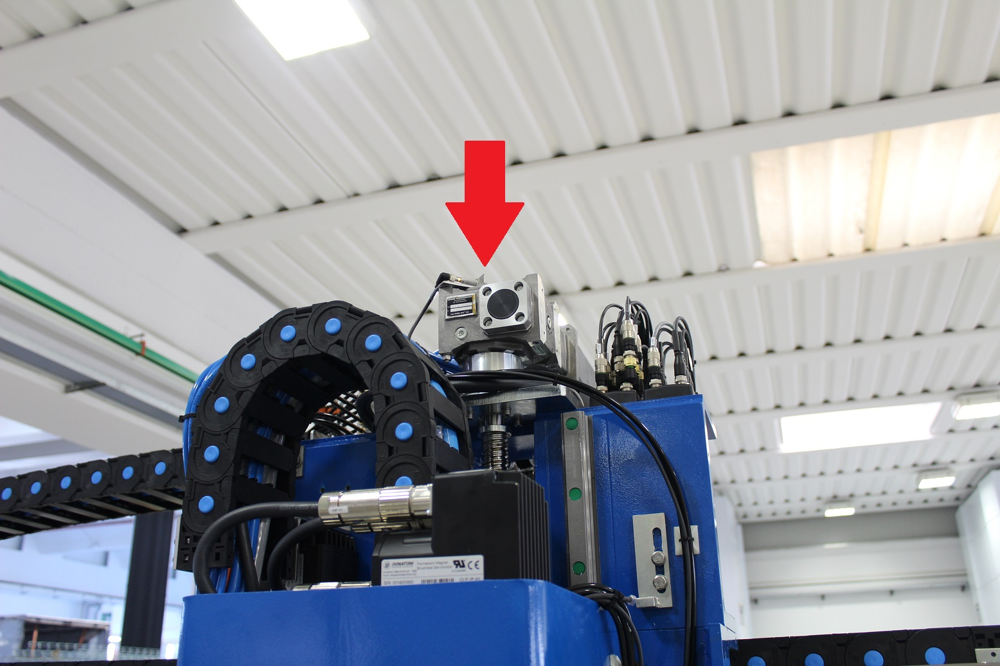

Possible causes
The causes of this error occurrence are multiple:
The machine is stuck in the material or on the bench and therefore the sensor above the Z-axis screw is covered;
the sensor is faulty
the cable from sensor to passive distributor on faulty chariot;


possible faults in cables from passive distributor to panel
Possible solutions
.
Press RESET button on console to clear error message regarding collision and raise axis Z slowly until lifting off the bench/material
Check the sensor operation by verifying that its LED is on and ensuring it turns off when a metal piece is placed in front of it; replace if malfunctioning.
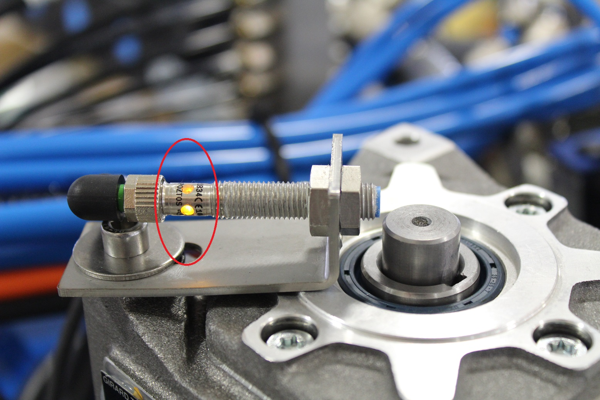
if the sensor is off, try changing input in passive distributor and see if the sensor turns on (e.g. connect it instead of axis X sensor); if there are no differences, the issue may be with the cable or connections up to the control panel
Related articles
PE0027 LACK OF INTERNAL WATER
Error explanation
This alarm is related to the lack of the input signal from the internal water pressure switch during an automatic cycle.
The pressure switches are located in this position and are of two types:
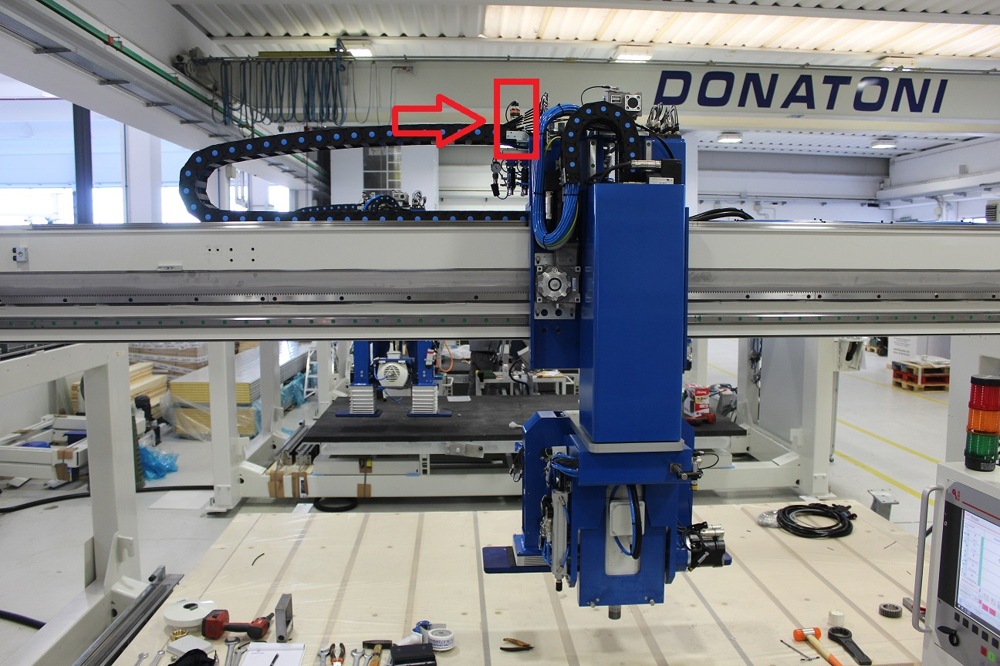

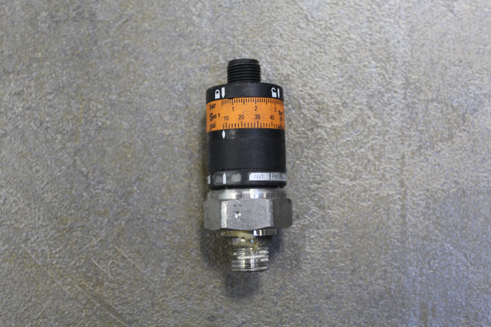
Possible causes
There are several possibilities:
Actual lack of water;
Pressure switch set for excessively high water pressure;
Faulty pressure switch;
Fault in the connections between the pressure switch and the electrical cabinet.
Possible solutions
Check the reasons for the lack of water, for example whether it is only a pressure drop.
Adjust the pressure switch to the desired pressure. To adjust the pressure switches, follow the adjustment procedure according to the type of pressure switch: EUROSWITCH or IFS (IFS technical data sheet);
Replace the pressure switch, preferably with one of the same type;
Check the pressure switch connection circuit by following the
Related articles
Related issues
TROUBLESHOOTING DTWAIN AND CAMERA
This section contains problems and solutions encountered with the camera software
- DTWAIN DOES NOT START
- OLD DTWAIN LAUNCHED FROM PARAMETRIX SHOWS NAME PROMPT
- FREEZE DURING CALIBRATION - RECTANGLE SELECTION PHASE
- PICTURE NOT TAKEN
- FREEZE DURING AUTOMATICMANUAL CALIBRATION DUE TO DLLNOTFOUNDEXCEPTION
- TROUBLESHOOTING MATRIX VISION CAMERAS
- TROUBLESHOOTING CAMERA HIKROBOT
More info
Guides and further information are available at the following link: DTWAIN
DTWAIN DOES NOT START
DTwain may fail to start for several reasons.
The first thing to do is always to check the relevant log file, which may help trace the issue back to one of the following possible cases.
XML serialization/deserialization error
One or more files in the C:\DTwain\BinFiles folder may have become corrupted.
Run the Kill_DTwain.exe executable.
First, make a backup of the files in this folder to a temporary folder.
There is also a specific backup subfolder managed by DTwain, containing the appropriate backup files:
if the specific corrupted file can be identified, try restoring only that file
if the specific corrupted file cannot be identified, try restoring all of them
Run DTwain.exe again:
try taking a photo; if everything is OK, delete the temporary folder
if DTwain does not start or the photo is not taken correctly, restore the files from the temporary folder and look for another solution to the problem
OLD DTWAIN LAUNCHED FROM PARAMETRIX SHOWS NAME PROMPT
Check the deltaZ compensation parameter.
If Parametrix calls DTwain with a negative thickness, the window for entering the photo name and thickness appears
FREEZE DURING CALIBRATION - RECTANGLE SELECTION PHASE
Error explanation
After calculating the calibration parameters, it freezes while calculating the large image on which the red area detection rectangle must be set.
It remains waiting for several minutes without showing any error, or it displays memory errors that are not described in the log.
Possible causes
Depending on the position of the camera, the detected area, the position of the patterns, and other variables, the software must calculate an image showing everything present in the photo projected onto the processed plane.
For example, if the relevant area of the image is small compared to the total image, the size of the total image may be too large for the system memory. Alternatively, if the image angle is too wide, the part far from the camera is excessively enlarged, resulting again in a memory problem caused by an image that is too large.
Possible solutions
Try lowering the image angle in order to narrow the angle and reduce the size of the image to be calculated.
Alternatively:Reduce the scale for the processed image:
Open the file C:\DTwain\DTwain.dll.config
Search for the warpAllImageScale parameter
Lower the value to 0.25 or less and try again (default 0.5)
<setting name="warpAllImageScale" serializeas="String"> <value>0.5</value> ]]>
Related articles
PICTURE NOT TAKEN
Error explanation
The software appears to be starting but the photo does not get taken
Possible causes
May be hardware or software. Follow procedures described below to identify cause and related solution.
Useful tools:
KillDTwain.exe: available at C:\\DTwain\\ closes all hanging program instances, including server instances.
StartDTwainServer.bat: available at C:\\DTwain\\Utility\\, opens a new instance of the DTwain server.
DTwainWinDefenderExclusion.exe: located at C:\\DTwain\\Utility\\, adds the DTwain processes to Windows Defender exclusions.
Run OpenPort.Bat in directory C:\\DTwain\\Utility\\, adds rule for allowing DTwain connections to Windows Firewall exceptions
Possible solutions
Identify the faulty program: DTwain or Parametrix? Opening DTwain alone does it take the photo? If yes then the issue is with Parametrix; otherwise the problem is indeed DTwain.
Check the status of connections: is the camera connected to PC (check in Computer)? Is the camera visible on the server? Is it connected? If not, ask to press emergency and re-enable commands. Now is the camera visible? If not, the issue may be hardware-related (broken Camera or server) or connection-related (machine network/cable).
If all hardware department is functioning check the software part: first open the day's log file where the problem occurred at path C:\\DTwain\\logs\\. Each line of the log file represents a message written by the program and is structured as follows:
Message Type | Date Time | Function that wrote the message | Message
Search for messages of type ERROR, read the message to try and understand the error.Some messages are generated by the CANON software library and report a message of type: 'Error generated from SDK [...additional information...]: error number'; in this case, convert the error into hexadecimal notation and compare it with the list of errors available at the following link:
COMMON ISSUES WITH PHOTO NOT TAKEN:
What follows must always be done AFTER completing the standard troubleshooting procedure.
Listed below are some known issues and related troubleshooting procedures:
EDS_ERR_INVALID_HANDLE 0x00000061L (97) : invalid camera handle pointer. Normally it is sufficient to close DTwain, press emergency stop, re-enable commands. In case of Office PC-Machine PC configuration on the machine PC use KillDTwain.exe program and once commands are re-enabled restart server using StartDTwainServer.bat program located in C:\\DTwain\\Utility\\, running it as administrator. If error persists a system reboot may be required.
EDS_ERR_DEVICE_BUSY 0x00000081L (129): device is busy by another application. There may be another DTwain open, or another program (like Canon programs installed for settings adjustments or added by the customer). Try using KillDTwain and close any applications that use the camera. Try a couple of shots; if the issue persists press emergency and re-enable commands. If it still occurs rebooting PC may be necessary."
EDS_ERR_COMM_PORT_IS_IN_USE 0x000000C0L (192): see previous.
EDS_ERR_TAKE_PICTURE_AF_NG 0x00008D01L (36097): autofocus remained set to automatic and overstressed on the ring causing error. Physically set autofocus to manual on camera
Camera Download Timeout Error: First check that the camera shutter opens normally; with the shutter closed, the camera detects darkness and takes many seconds to take the picture. If necessary adjust the shutter air so it opens faster or increase the shutter waiting time in settings>camera settings>shutter wait. By default this parameter is set at 2000 milliseconds; if needed increase it."
In case of particularly poor ambient light or dark slab, the default wait time to receive the photo (8 seconds) may not be sufficient. In this case there are different options: if the error occurs during installation and it is known that the environmental situation is not an isolated case but represents the standard working condition for the customer, camera shooting parameters can be adjusted via a dedicated procedure by increasing ISO and/or exposure compensation to reduce shooting times. If instead the case is isolated (dark slab, broken lamp) and default settings work well in 90% of cases, wait time may be extended: Open file C:\\DTwain\\DTwainLib.dll.config with text editor (Notepad), search for following block:<setting name="downloadPhotoTimeOut" serializeas="String"> <value>8000</value> ]]>change the value 8000 (waiting time in milliseconds) to a higher one. Increase by 1000, save, close the file, try opening DTwain and take the picture. Once found a value for which the shot occurs without problems increase further by some seconds the value to provide greater safety margin
RESTORATION BACKUPS
In some cases it may be useful to restore DTwain to the state it was at the end of the last successful calibration. To do this simply unzip the backup.zip file located inside the folder C:\\DTwain\\BinFiles and copy the two files contained therein into the folder C:\\DTwain\\BinFiles, making sure first to delete (or for safety move to a different location) all files present in that folder except for the backup file.
At next startup the program will be in the state it was at end of last calibration performed.
Related articles
Articles related to selected labels are displayed here. Click to edit the macro and add or modify labels.
FREEZE DURING AUTOMATICMANUAL CALIBRATION DUE TO DLLNOTFOUNDEXCEPTION
Problem
When the coordinates are confirmed in automatic mode, or the selected points are confirmed in manual mode, the calibration spinner keeps turning and never completes.
In the most recent versions, the message 'Fatal error, the application will be closed' appears
If the log is inspected, a message such as dllNotFoundException can be found.
Solution
Section 1
Close DTwain using the 'KillDTwain.exe' application
Disable Windows Defender real-time protection
Open the path 'C:\DTwain\Utility'
Run the file 'DTwainWinDefenderExclusion.exe' as administrator
Copy the following file to the Desktop: Visual-C-Runtimes-All-in-One-Sep-2019 (1).zip
Extract the file (right-click the file, select 'Extract all...' from the menu, press Enter)
Open the extracted files folder and run the file 'install_all.bat' as administrator
Re-enable Windows Defender real-time protection
Delete the installation files and empty the Recycle Bin
If the problem persists, try the following:
Section 2
Open the Windows Start menu and go to the Settings page
Open the Apps page (System→App and features)
Uninstall all entries of the 'Microsoft Visual C__' type
Restart the PC
Repeat Section 1 from point 7
If the problem persists, try the following:
Section 3
Repeat Section 2 from point 1 to point 3
Open the Command Prompt as administrator (Start→ Windows System→Command Prompt)
Type DISM /online /cleanup-image /restorehealth
Press Enter
Wait for completion; this may take several minutes
Type sfc /scannow
Press Enter
Wait for completion; this may take several minutes
Restart the PC
Repeat the steps in Section 1 starting from point 7
Visual-C-Runtimes-All-in-One-Sep-2019 (1).zip
TROUBLESHOOTING MATRIX VISION CAMERAS
Page dedicated to troubleshooting issues related to Matrix Vision cameras.
WARNING: try only AFTER confirming that issues are actually related to Camera and not to TWAIN.
Base:
Ensure that for any issue, verify that the camera is correctly connected without connection problems. To do this open the program mvIPConfigure.
In the devices list must be displayed the camera; otherwise it is not connected to power or network.
If I click on Camera, it should result that there are no connection issues. In case problems are detected, an automatic troubleshooting procedure is usually proposed.
On the right, a series of parameters are displayed, including assigned ip and negotiated connection speed. The latter MUST be 1000 mb (or 1 gb). If less is negotiated (e.g., 100mb), there’s likely an issue with one of the two ethernet cables (camera ↔ router or pc ↔ router). Test with a crossover cable to see if replacing either resolves the problem.
Picture taken in rows
Symptom: photo is taken but with strange lines and colors (usually green/purple stripes)
Solution: AFTER attempting above in basic steps, try updating camera firmware.
mvBlueCOUGAR-X_Update-250330.mvu
Download the file above
copy it to the customer’s desktop
open mvDeviceConfigure
Select camera
Select Action->Update Firmware ->From Specific Local Firmware File
Select the file from the desktop
Confirm
Waiting for procedure completion (requires a few minutes)
Check if problem resolved
TROUBLESHOOTING CAMERA HIKROBOT
Page dedicated to troubleshooting issues related to Hikrobot cameras.
WARNING: try only AFTER confirming that issues are actually related to Camera and not to TWAIN.
Base (to be reviewed as it was simply copied from "Matrix Vision")
Ensure that for any issue, verify that the camera is properly connected without connection problems. To do this open the program mvIPConfigure.
In the devices list must be displayed the camera; otherwise it is not connected to power or network.
If I click on the camera, it must result that there are no connection issues. In case problems are detected, an automatic troubleshooting procedure is usually proposed.
On the right, a series of parameters are displayed, including the assigned ip and negotiated connection speed. The latter MUST be 1000 mb (or 1 gb). If less is negotiated (e.g., 100mb), there’s likely an issue with one of the two ethernet cables (camera ↔ router or pc ↔ router). Test with a crossover cable to see if replacing either resolves the problem.
Symptom
It has become difficult to take snapshots or even just get a shot
Possible cause
The repeated connection and disconnection of the device caused some unwanted parameter saving.
Resolution
In the connected camera settings panel, top right, an icon of saving appears that allows loading some default camera settings:
PE0018 NO FEED VALUE MUST BE 0
Error explanation
Error message displayed during startup of an automatic or semi-automatic cycle due to some processing speed being set to zero;
Possible causes
Set one or more machining speeds at 0 mm/min both in automatic cycles and semi-automatic cycles;
Possible solutions
Change machining parameters with speeds different than zero
Related articles
PE0067 VOID NOT GENERATED
Error explanation
Alarm that appears when performing a shift with suction cups or from an automatic program page, or from the manual page.
Possible causes
One or more suction zones outside the area of the piece to lift
Sensor not regulated correctly
Faulty sensor
Vacuum cup rubber damaged
Possible solutions
Disable suction zones that are outside the piece area or move the position of the piece pickup
Turn the adjustment grain of the vacuum switch half a turn counterclockwise.
Connect sensor cables together and check if error message disappears;
Replace suction cups
Related articles
PE0028 AXIS A NOT IN CORRECT POSITION
Error explanation
The system generates the message 'Axis A not in correct position' every time the button 'Parking' or the button 'Manual tool change' is pressed and axis 'A' is not in correct position (0 degrees).
Possible causes
The parking button P was pressed and axis A is not at 0.00_.

Manual tool change pressed and axis A is not at 0.00_
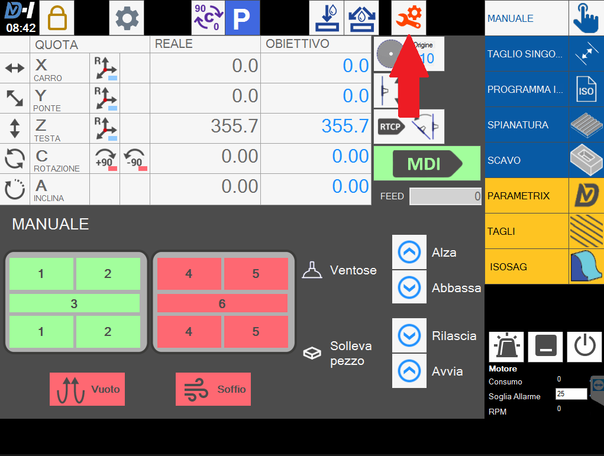
Possible solutions
Move axis A to position of 0.00_ before pressing parking or manual tool change buttons
Related items
PE0015 SPINDLE OVERCURRENT
Error explanation
During automatic work cycles the PLC may generate an Extracurrent alarm of the spindle due to exceeding the maximum load capacity of the motor in question. The threshold is set based on the working type and consequently on the spindle speed
Generally one starts a working process, looks at the disk/milling absorption value then sets a threshold value of 3/5A higher than the absorbed value during normal operation.

Possible causes
Set an incorrect threshold alarm value for the type of processing;
Excessive electro-spindle absorption due to workings with excessively high speeds.
Tool unsuitable for type of work performed
Replace bearings
Possible solutions
Adjust threshold amperage value
Gradually reduce speeds until finding correct speeds
Check tool if it is suitable for the operations being performed and whether it is not a highly worn-out tool that does not cut
Related articles
PE0007 BLADE THERMAL OVERLOAD ACTIVE
Error explanation
The blade thermal overload alarm is generated when the inverter that controls spindle rotation has a malfunction.
Possible causes
The causes of this error must be assessed on a case-by-case basis, as the electrical cabinet must be opened and the inverter error messages must be checked.
NB: to open the electrical cabinet, carry out the procedure described in
Opening the electrical cabinet while powered on
Possible solutions
The solutions to the problem will depend on the status of the inverter. It is important to assess whether the problem is caused by the connections after the inverter or before the inverter:
For example, try disconnecting the spindle cable, then try starting the blade and check whether the error occurs again.
Related articles
PE0016 WATER MISSING
Error explanation
This alarm is related to the lack of input signal from the water pressure switch during an automatic cycle.
The pressure switches are located here and come in two types:


Possible causes
The options are numerous:
Lack of actual water;
Pressure switch set for water pressure too high;
Faulty pressure switch;
Fault between pressure switch panel connections.
Possible solutions
Use a to emphasize key steps.
Check reasons for lack of water; if it is just a pressure drop.
Adjust the pressure switch to the desired pressure. To adjust the pressure switches, follow the adjustment procedure according to the type of pressure switch: EUROSWITCH or IFS (IFS technical data sheet);
Replace the pressure switch, preferably with one of the same type;
Check the pressure switch connection circuit by following the
Related articles
INCORRECT PIECES MEASURES
Check tool data
Miter cuts
Move disk to touch bench
Acquire bench quote
Reset axis Z
Move disk onto material surface and touch it
Read the value in axis Z (this is the thickness)
Insert this value in material thickness
Try cutting without using the probe.
PM0011 PROBE PISTON OUT OF POSITION
Error explanation
A block is inserted if the probe piston is not in parking position.
All axes are set to 'hold'
Possible causes
Position of piston slightly beyond threshold
Probe piston faulty
Wiring error
Possible solutions
Check value IW40 related to slab probe position.
If the read value is less than 100 probably the threshold value is too low. In this case, in the KvIsoGui interface open EditorShared - Parameters - Sheet Probe and modify the value 'Parking position' = 100
If the read value is greater than 100 check the real position of the probe and proceed with electrical checks according to the machine's electrical diagram.
If the defect cannot be found it is possible to disable slab probe to remove alarm (with disabled slab probe the probing result, if performed, is fixed at 30mm)
Related items
PE0019 ERROR ON ACTUATORS
Error explanation
Generic error on drives; in case of Jet and Spin machines the issue will be with the drive used as Feeder:
Possible causes
The causes are multiple and depend on the error message displayed during activation:
If the mounted feeder is new, there may be incorrect configuration parameters (Error messages F09, F21 on the feeder's display);
Feeder is faulty;
Possible solutions
You can choose to use a to emphasize key steps.
Connect to the power supply using the COM cable and repeat the
Check the error message on the power supply display (F07, F09, F21), try restarting the machine and check whether the error appears again, and assess whether it is a problem related to one of the motors;
Related articles
PE0069 VACUUM CUPS NOT IN PARKING POSITION
Error explanation
This error occurs when the machine detects that one or both suction cups are not in parking position.
Possible causes
Air shortage
Lowered suction cups
Incorrectly adjusted sensors
Faulty sensors
Possible solutions
Check if air supply is present in machine when paired with error PE0066 Air missing
Press the appropriate button to raise the suction cups
Opening steel covers located laterally on vacuum cup arms verify that sensors in the upper part of the piston are ON when cups are up.
Related articles
PE0011 EXTRA CURRENT AXIS Y
Error explanation
During automatic work cycles the PLC may generate an ExtraCurrent alarm for each individual axis due to exceeding the maximum load capacity of the motor involved.
Possible causes
Highlight key steps using a dedicated panel.
Excessive instantaneous effort in direction Y
Axis Y motor malfunction
Possible solutions
Highlight key steps using a dedicated panel.
Press the reset button to reset the error; then press the emergency button, re-enable commands and resume normal use.
After attempting to perform step 1, if the error recurs while moving freely in any direction, replace the Y-axis motor
Related items
PE0029 LUBRICATION SYSTEM FAULT
Error explanation
The lubrication system fault alarm is displayed when there is an obstruction in the grease distribution circuit and it fails to discharge grease; check that minimum quantity of grease is present in the reservoir and subsequently analyze the distribution path.
The grease tank empty alarm indicates that it is necessary to fill the reservoir.
Attached is the Polypump manual:
Possible causes
You can use a
Grease tank empty;
Grease jammed at pump outlet;
Error in grease pump wiring.
Possible solutions
You can use a
Through the dedicated charging point pump the correct grease EP1 into the pump;
Check that at the grease outlet point of the pump there are no obstructions or that the grease is old and solid;
Using the
NOTE: TO RESET THE ERROR, PRESS THE (CYCLE START BUTTON) _ (MINUS BUTTON) FOR A FEW SECONDS AND RESET THE ERRORS DIRECTLY ON THE PUMP BY PRESSING RESET
Related items
PE0005 MISSING COMMAND ENABLED
Error explanation
Displayed on machine power-up or after release of emergency mushroom
Possible causes
You can use a
The command enable button (RESET) was not pressed;
Command enable button malfunction (RESET) on electrical panel;
Safety control unit malfunction Pilz.
Possible solutions
You can use a
Press the reset button on the electrical panel
Check contacts of the command enable button, namely when holding down the button the contact must close and the green START LED must appear on the control unit; if not replace the button contacts.

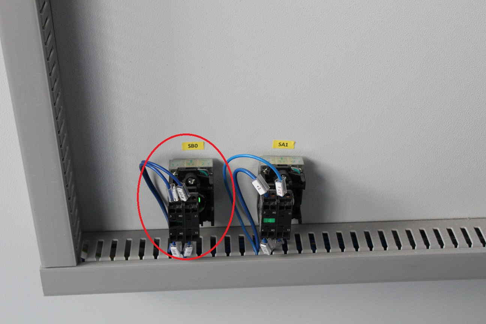
Related articles
PE0041 CH 0 PROGRAM WITHOUT M2M30
Symptom:
using the TEST ISO function check for message 'PE0041 CH 0 Program without M2-M30' on any ISO file
the same ISO files can be executed normally
The issue is caused by the fnzm30.srt file on the client's CNC.
Solution:
download attached file fnzm30.srt
copy into folder C:\\kvara\\CustomerMachine\\Iso
open KvIsoGui
Menu > Archive Management
move in left space to folder C:\\kvara\\DiskC\\Iso
click on right space
click 'Change Unit' in the bottom buttons
select disk C of the CNC
select the file fnzm30.srt in folder C:\\kvara\\DiskSpace\\LeftISO
click 'Copy' in the bottom buttons
File fnzm30.srt below.
PE0031 PANEL OVERTEMPERATURE
Error explanation
This error appears when the thermostat inside the electrical panel detects a temperature higher than the maximum set temperature which is usually 45°C
Possible causes
Air conditioner or panel fan faulty;
Thermostat incorrectly adjusted;
Possible solutions
Check that the recirculation fan is working properly.
Check that the overheating thermostat inside the panel is set to 45 degrees (check the wiring diagram). If it's already set to the correct temperature, check that it opens and closes the contact.
Related articles
PE0003 MAIN POWER FAILURE
Error explanation
Thermal disk alarm is generated if the inverter managing spindle rotation has malfunction.
Possible causes
The causes of this error must be evaluated each time as it will require opening the electrical panel and checking inverter error messages.
Mechanical issues:
Oil pump motor locked; you can try starting the workbench pump and see if it actually spins. In case of complete blockage, replace the oil pump
Look up error code on the inverter and analyze possible cause in the attached manual
Possible solutions
Solutions to the problem will depend on the state of the inverter; it is important to assess whether the issue stems from Post-inverter or Pre-inverter connections:

Try unplugging the spindle cable and try starting the disk to see if the error reoccurs.
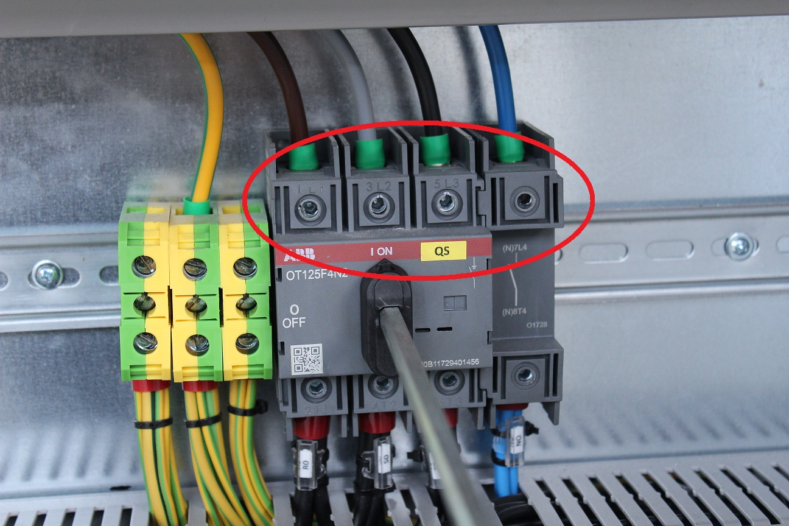
Related articles

Related problems
MECHANICAL TROUBLESHOOTING
DISK PARALLELISM AS A FUNCTION OF A
Error explanation
Tilting axis A loses disk parallelism with axis C
Possible causes
Incorrect vertical alignment of disk
error in mechanical processing between axis C and axis A
Possible solutions
Check whether the issue is caused by incorrect mechanical adjustment, verify the vertical alignment of the motor with A = 90_.
Bubble level on left/right side of the spindle.

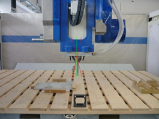
If this Regulation is good we can attempt to resolve the issue via Software Compensation:
Check with A=45_ the alignment to the X axis and rotate C until the error is below the tolerance (save this value CompC)
In KvISOGui software: Menu -Shared Editor -> Parameters of Axis C
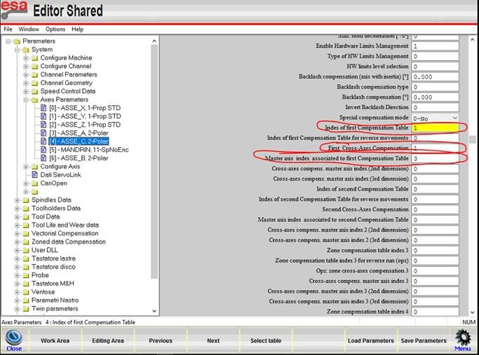
In Zone Data Compensation - [1]

Fill the value as shown in the image.
Write in measure 1 compensation the saved value before (compC)
Write in measure 2 compensation the value of CompC multiplied by two
Restart system
Related items
TOOL_ PARKING LOCATION
The tool_ does not always return to the parking position due to misalignment between piston and linear guides.
Temporary regulation procedure:
Place Tool_ in park position
Loosen slightly the 3 bolts shown in the
Move down and up with the TOOL_
Tighten the bolts.
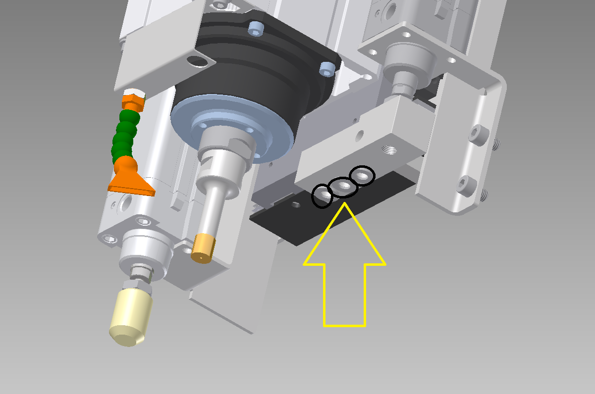

PE0065 THERMAL PUMP VACUUM ACTIVE
Error explanation
Fault in bench lifting system; the thermal-magnetic switch related to the vacuum pump has tripped, it provides protection for both short circuits and overloads on the system. To reset the switch move the selector to 0 then to 1
Possible causes
Possible causes can be divided into Mechanical or Electrical problems
Mechanical issues:
Vacuum pump motor jammed; you can try starting the vacuum pump and see if it actually spins.
The vacuum pump basin is empty
Electrical issues:
Short circuit between motor phases;
Missing phase;
Short circuit of motor windings;
Faulty switch or absorption threshold set at an incorrect value
Possible solutions
Mechanical
Check first that the motor cooling fan spins freely; for example, try moving it with a screwdriver. If blocked
fill up to overflow level the tank
Electrical -> assistance of an electrician or on-site Donatoni technician is recommended
Check that there is no continuity between the various phases; disconnect the cable from the electric box of the pump, insulate the terminals and reset the switch activate oil pump if it trips the problem may be the cable
Measure input voltage with a multimeter and verify presence of all phases; if for example one phase is missing check that all clamps are tightened.
If during the test at point 1 the switch does not trip, connect the cable to the pump; if starting the pump causes the switch to trip, the issue is with the pump and it will need replacing.
If you perform previous tests and the thermal magnet continues to trip, the problem may be the switch itself; moreover, the threshold must be set at 4A
Related articles
TROUBLESHOOTING OLD MACHINES
In this section we insert troubleshooting for machines no longer in production
PM0033 PRESSURE RESET
Error explanation
MOVE1 system is activated using a piston.
It operates with a pressure switch to detect the in the piston.
Possible causes
The sensor does not detect sufficient pressure in the lower chamber of the cylinder. It may be due to leaks or issues with the sensor or valve

Possible solutions
With 3/4 it must be closed (IW4.4).
Try moving the up and down.
Try again if it does not work. Restart the machine.
If it does not work remove the and attempt using the automatic movement system via direct hardware commands on the .
Related articles
PE0009 RICH. COLLISION QUOTE
Error explanation
This error message appears every time you command the machine in MDI mode to position itself at a height outside the software travel limits of the machine;
Possible causes
Set bench quote very high;
Machine commanded in MDI to go to a point it cannot reach with its travels.
Possible solutions
Once the error appears, press the reset button on the console and verify the actual bench quote using the console's manual commands (check diameter value disk etc., also pay attention to ASSE A inclination)
Check if the machine can actually reach the target quotes that are set;
Related articles
Related problems
TROUBLESHOOTING PARAMETRIX
This chapter includes comments and tips on issues encountered with the Parametrix software
- NON-REPRODUCIBLE STARTUP FREEZE
- TWIN IMAGE SENTING TO UNLOADING MONITOR (Different Alphabets)
- PARAMETRIX IS CLOSED BY THE OPERATING SYSTEM
- ISSUES WITH DISPLAY SETTINGS FOR NON-STANDARD SCREEN CONFIGURATIONS
- REPETITION START BLOCK
- DXF ISSUES
- DATABASE AND POSTGRESQL SERVICE ERRORS
- POSTGRESQL - DATE AND TIME
- POSTGRESQL – POSTGRESQL SERVICE USER
- POSTGRESQL – POSTGRESQL SERVICE NOT STARTING
- POSTGRESQL – INSTALLATION MISSING .DLL
- POSTGRESQL – INSTALLATION LAUNCHING OF PARAMETRIX ON A PSQL VERSION DIFFERENT FROM THE SETUP
- POSTGRESQL – POSTGRESQL SERVICE NOT STARTED
- POSTGRESQL – DATABASE INSTALLATION ERRORS ON WINDOWS XP
- POSTGRESQL - POSTGRESQL SERVICE STARTS AND STOPS IMMEDIATELY
- POSTGRESQL - UNREGISTERED SERVICE
- PARAMETRIX FAILS TO LAUNCH WITHOUT DISPLAYING ERRORS
- CONFIRM PHOTO BUTTON NOT WORKING
- ISSUES WITH PREVIEW DISPLAY OF PIECES OR BLACK PHOTO
- PARAMETRIX FAILS TO START, INSUFFICIENT DISK SPACE ON WINDOWS
More info
Guides and further information are available at the following link:
NON-REPRODUCIBLE STARTUP FREEZE
Error explanation
When the software starts, it freezes on the 'Dv' animation without showing any errors.
The issue is NOT reproducible.
There is no information in the log.
Possible causes
Found on Windows XP with version 4.8. It is thought to be caused by the startup of parallel tasks that are poorly supported by the operating system.
Possible solutions
Disable the startup animation and inform the customer that the animation indicating the waiting phase will no longer be shown.
For example, after double-clicking, it may look as if the software is not running, but it is actually loading. Wait 30/40 seconds for the manual page to appear.
Open the file C:\parametrix\Giocut.exe.config
Modify one of the final lines by setting false instead of true
Related articles
TWIN IMAGE SENTING TO UNLOADING MONITOR (Different Alphabets)
Error explanation
Machine in Greece; images of workings were not displayed on unloading monitor
Possible causes
Language settings incorrect
Possible solutions
Follow these steps:
Open Control Panel
Go to Geographic Area
Admin options tab
Current language for non-Unicode programs: verify that the set language is the same between both PCs (machine edge and unload)
Check also other language settings for correctness
Related articles
PARAMETRIX IS CLOSED BY THE OPERATING SYSTEM
At startup of Parametrix a warning window appears indicating that there have been problems and the application must be closed.
until you press close Parametrix keeps running
No errors appear in Parametrix's log; the error is visible on Windows Event Viewer
Possible causes
System operating date and time
Possible solutions
Set Windows date and time correctly
Related articles
ISSUES WITH DISPLAY SETTINGS FOR NON-STANDARD SCREEN CONFIGURATIONS
Installing Parametrix on a computer with non-standard screen settings (e.g.: scaling at 200%) may result in some issues:
abnormal display of various Parametrix windows
abnormal display of some Parametrix icons
abnormal rendering display using Book Match functionality
...
Adjusting application DPI settings may help resolve this type of issue as outlined in the procedure below.
Procedure
1 - right-click on the Parametrix executable
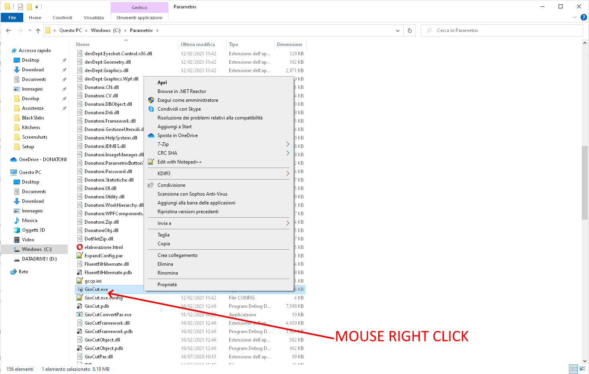
2 - click on 'Properties'

3 - Go to window 'Compatibility'

4 - Click the modify settings button for high-DPI

5 - Try modifying settings; unchecked flags should be set as defaults
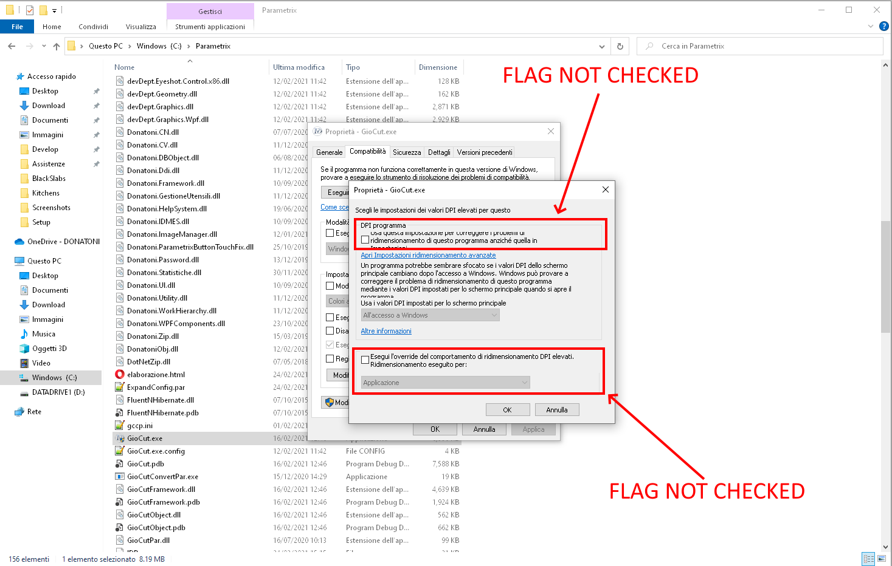
6 - Try modifying 'program DPI'

7 - try modifying 'Perform high-DPI scaling behavior override' with the options provided by 'Scaling performed for:'
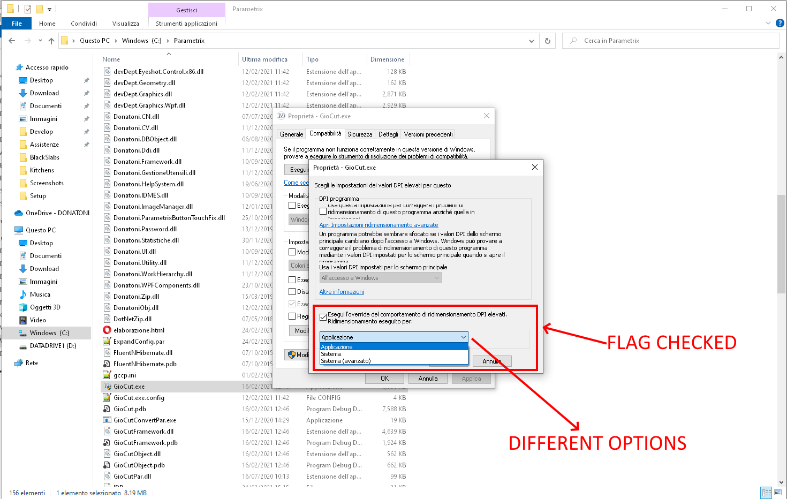
Try modifying both flags with the available options

Note
No single solution exists today for all cases; the correct combination of settings that resolves the issue depends heavily on the specific context. It is recommended to try step by step with different flags.
The procedure has been designed for PCs with Windows 10 and Windows 11.
No possibility of acting on these settings in Windows 7.
The statistically most effective combination with resolution 125% (typical case) appears to be:
check only in second checkbox
from the dropdown menu of the second tab select option 'System'
REPETITION START BLOCK
Error explanation
At startup Parametrix locks up without giving errors.
Repetitive problem on old CNC
Possible causes
Due to lack of some variables in the defcn such as tool name.
File AlrData.alm in C:\\Parametrix\\ is large. In the log, after minutes of waiting, error for connection with esa.dll
Possible solutions
Perform on-machine software update or alternatively disable NC communication (removing tool reading from NC is not sufficient).
Delete the AlrData.alm file
Related articles
DXF ISSUES
Parametrix does not display the DXFs and does not import the DXFs
Issue:
Parametrix does not import DXFs
Parametrix does not display the .dxf preview
Symptoms:
Parametrix does not display the .dxf preview
Parametrix returns a generic error when attempting to import DXFs
Log Parametrix: error in CopyModules.dll
Parameter 'DXF All Polylines' in second lock active (parameter NewImportDxf=True on the config.ini)
The same files on which the problem is seen do not cause problems when used on other PCs (the DXFs are correct)
The issue is typical of office PCs but can also occur on machine-side PCs.
To ensure proper importation of DXFs, some System Operating System DLLs must be updated.
Solution:
copy the two following DLLs Teigha on your local PC:
Microsoft Visual C__ 2010 Redistributable
Microsoft Visual C__ 2010 Redistributable (msvcr100.dll)
the DLLs can be found in two places:
attached in the following page
at address: \\FILESERVER01\\DiscoUTec\\UfficioTecnicoProgrammazione\\Programmi Esterni\\Files Programmi\\Teigha DLL
copy both DLLs from your local PC to the client's PC desktop
copy both DLLs from the client's PC desktop into the following paths on the client’s PC:
C:\\Windows\\System32
C:\\Windows\\System32
C:\\Windows\\System32
as an alternative, both DLL can be copied into the installation folder of Parametrix (usually C:\\Parametrix)
Delete both DLLs from client’s PC desktop
NOTE: it is not possible to copy the DLLs directly into the two indicated client PC paths via TeamViewer; therefore, the procedure requires first accessing the client PC's desktop.
DATABASE AND POSTGRESQL SERVICE ERRORS
Parametrix encounters errors during communication with the DB
Following some possible scenarios and related proposed solutions.
POSTGRESQL - DATE AND TIME
Check that the date and time are correct. It happens on old PCs with a discharged BIOS battery that settings for date and time are lost. Since PostgreSQL performs data integrity checks on what it reads/writes, if you try to insert data with past dates errors will be reported.
Set date and time so that they are correct.
POSTGRESQL – POSTGRESQL SERVICE USER
The PostgreSQL service must be able to interact with the Desktop. Often, network users cannot perform this operation. It is necessary to configure the PostgreSQL service so that it can interact with the Desktop
Solution:
1 - Open the application for managing Services

2 - Right-click on postgresql and select Properties

3 - Click on Connection
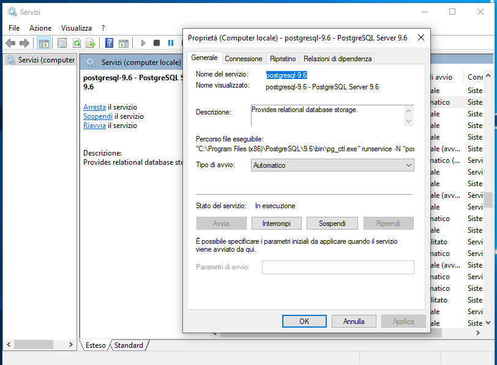
4 - Set 'Local System Account' and check the box 'Allow service to interact with desktop'
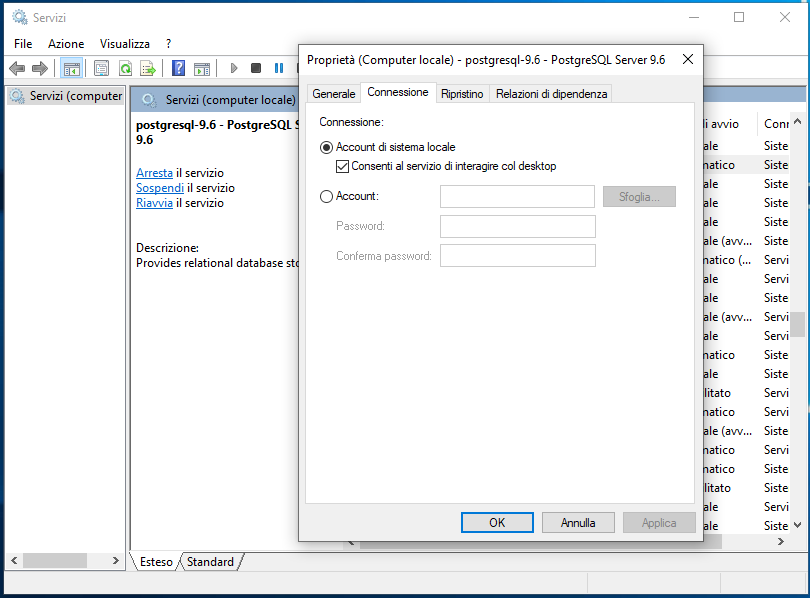
POSTGRESQL – POSTGRESQL SERVICE NOT STARTING
Problem: PostgreSQL installation issues.
Symptoms:
in folder C:\\Program Files (x86)\\PostgreSQL\\9.6\\data no files
also forcing PostgreSQL service startup with BAT files returns an "access denied" error
the service was not recorded
Related articles:
Solution:
Check decimal separator dot (".") and comma (",") separator
Check culture settings: if different from defaults (English – United States), set them as such and revert at the end of procedure
Create a local user 'postgres' pwd: admin with administrator privileges
Uninstall postgresql
Download the installer manual for version 9.6; it is located on the server or in the dependencies of the setup
Copy it to C:\\
Run cmd.exe and type runas /user:postgres cmd.exe
In new console type cd\\
postgresql-9.6.5-windows.exe, the name of the exe you copied earlier
We must manually create the user donatoni, always in the postgres user's console (runas /user:postgres cmd.exe), and manually assign superuser rights
cd C:\\Programmi(x86)\\PostgreSQL\\9.6\\bin
psql -c 'CREATE USER donatoni WITH PASSWORD ''Parametr1x2017'';'
POSTGRESQL – INSTALLATION MISSING .DLL
Problem: installing PostgreSQL the following error occurs: Unknown Error while running C:\\Users\\user\\AppData\\Local\\Temp\\postgresql_installerxxxxxxx\\getlocales.exe
Solution:
Check if libraries are already present: if there are duplicate libraries, uninstall all manually
Install all the Visual-C-Runtime libraries. The zip file named Visual-C-Runtimes-All-in-One-Sep-2019 (1).zip is located in the folder \\\\fileserver01\\discoutec\\UfficioTecnicoProgrammazione\\Programmi Esterni\\Installer Vari
Check that in folders C:\\Windows\\System32\\ and C:\\Windows\\SysWOW64\\ the dll msvcr120.dll is present
Replace the existing DLL with those on the server:\\\\FILESERVER01\\DiscoUTec\\UfficioTecnicoProgrammazione\\Programmi Esterni\\Files Programmi\\Postgresql DLL
Restart postgres from command line removing auto-installation of runtimes (--install_runtimes=0):
postgresql.exe --mode unattended --superaccount donatoni --superpassword Parametr1x2017 --serverport 5432 --stack-builder-disable yes --runtime-installation no
POSTGRESQL – INSTALLATION LAUNCHING OF PARAMETRIX ON A PSQL VERSION DIFFERENT FROM THE SETUP
Problem: unable to correctly install PostgreSQL 9.6, version of Parametrix setup
Symptoms:
Installing PostgreSQL encountered error: could not load SQL modules
The PostgreSQL service does not start: it may appear running; performing start/restart shows a message stating that it has started and then was stopped
Parametrix fails to launch; errors related to the database are found in the log
Related joints:
Solution:
Uninstall postgresql
Create a local user 'postgres' pwd: postgres with admin privileges
Install a different version of postgres (start from postgresql-9.6.24-1 and go downwards; if not possible with these try postgresql-13.5-1)
If no error messages proceed; otherwise change postgres version
In the PostgreSQL installation folder open the file 'postgresql.conf':
modify 'password_encryption' to 'md5'
save the file
In the PostgreSQL installation folder open the file 'pg_hba.conf'
modify first occurrences of scram-sha-256 as trust
save the file
restart service
Run cmd.exe and type runas /user:postgres cmd.exe
cd \\
postgres password
Enter chosen password
Confirm chosen password
In the PostgreSQL installation folder open the file 'pg_hba.conf'
modify first 3 occurrences of 'scram-sha-256' with 'md5'
save the file
restart service
cd \\bin
psql -c 'CREATE USER donatoni WITH PASSWORD 'Parameter1x2017';'
psql -c 'ALTER USER donatoni WITH SUPERUSER';
Find the registry key: 'Computer\\HKEY_LOCAL_MACHINE\\SYSTEM\\CurrentControlSet\\Services\\postgresql-x64-13' (the name of the key depends on the installed PostgreSQL version; NB: the key must exist, otherwise there is a problem):
modify Display Name as: postgresql-9.6
modify Image Path: '``\\bin\\pg_ctl.exe' runservice -N '`postgresql-9.6'` -D '``\\data' -w (only the bold part should change)
Check that the key exists: Computer\\HKEY_LOCAL_MACHINE\\SOFTWARE\\WOW6432Node\\PostgreSQL\\Installations\\postgresql-9.6:
if not exists create it
create field of type 'String value': name 'Base Directory', value ''
restart service
POSTGRESQL – POSTGRESQL SERVICE NOT STARTED
Problem: postgresql startup issues.
Symptoms/situation:
Parametrix does not start
log Parametrix: error on preparation/creation/linking of database
Activity management > Services:
postgresql service present and correctly installed
Service status of postgresql 'Stopped' (generally not 'Running')
Solution:
Open the application for managing Services
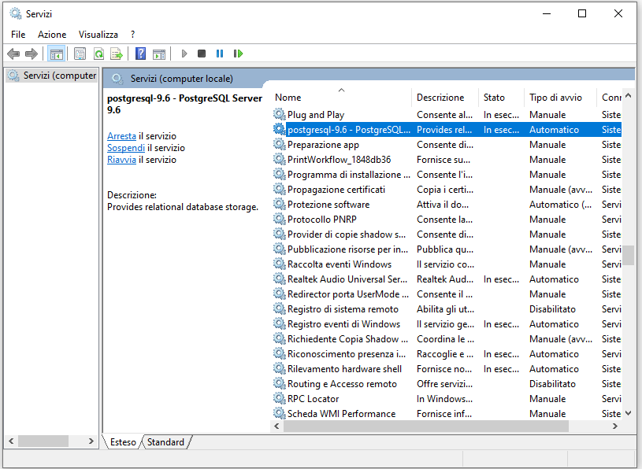
Right-click on postgresql and select 'Properties'
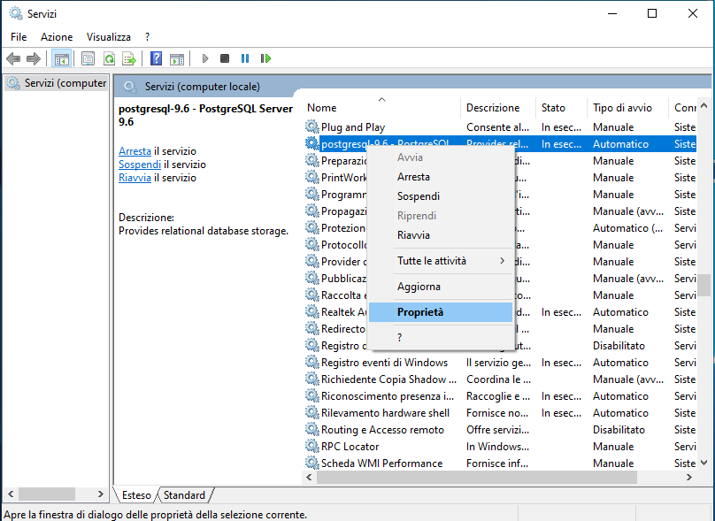
In the 'General' tab open the dropdown menu 'Startup type'

Set to 'Automatic'

Manually start the postgresql service

Launch Parametrix
POSTGRESQL – DATABASE INSTALLATION ERRORS ON WINDOWS XP
Problem: PostgreSQL installation issues on Windows XP.
Symptoms/situation:
error message during installation of PostgreSQL via setup or command prompt
Solution:
Error occurred during installation via setup:
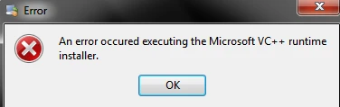
check if libraries are already present: if there are duplicate libraries, uninstall all manually
try installing the VC runtimes manually; they are located at the following path:
\\fileserver01\\discoutec\\OfficeTechnicalPlanning\\ExternalPrograms\\VariousInstallers\\Visual-C-Runtimes-All-in-One-Sep-2019 (1)
an error occurs during installation via cmd:
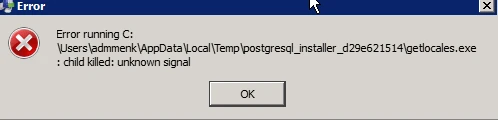
possibly VC__ 2013 x86 was not installed correctly
check if libraries are already present: if there are duplicate libraries, uninstall all manually
attempt to run it manually; they are located at the following path:
\\fileserver01\\discoutec\\TechnicalOfficePlanning\\ExternalPrograms\\VariousInstallers\\vcredist_x86
POSTGRESQL - POSTGRESQL SERVICE STARTS AND STOPS IMMEDIATELY
Problem: postgresql stops immediately, whether started automatically or manually
Symptoms:
Parametrix does not launch
log Parametrix: errors on database, timeout expiration on startup attempts
Starting manually the PostgreSQL service displays a message stating that PostgreSQL is started and then stopped
in the postgresql log appears a message similar to the following:
2024-04-19 10:42:24 CEST LOG: the database was stopped at 2024-04-18 19:46:42 CEST
2024-04-19 10:42:24 CEST LOG: the primary checkpoint record is not valid
2024-04-19 10:42:24 CEST LOG: secondary checkpoint record is not valid
2024-04-19 10:42:24 CEST PANIC: valid checkpoint record localization failed
2024-04-19 10:42:24 CEST LOG: process start (PID 512) was terminated by exception 0xC0000409
2024-04-19 10:42:24 CEST TIP: Refer to the included header file C 'ntstatus.h' for an explanation of the hexadecimal value.
2024-04-19 10:42:24 CEST LOG: start interrupted due to failure of the startup process
2024-04-19 10:42:24 CEST LOG: the database has been stopped
Text File
postgresql-2024-04-19_104224.log.txt
Solution:
open the command prompt
go to the folder 'bin' of postgres: cmd C:\\...\\PostgreSQL\\9.6\\bin
enter the following command: pg_resetxlog DATADIR
start manually the postgresql service
Related articles:
POSTGRESQL - UNREGISTERED SERVICE
On Windows this behavior usually indicates: (a) installation performed without registering the service ('not as service' option), (b) service registration error during setup, or (c) viewing 64-bit vs. 32-bit services / installed in a different context (less common). Direct diagnosis and recovery procedure.
Check if the service actually exists (even if you don't see it at first glance)
Open Command Prompt as Admin and run:
sc query type= service state= all | findstr /I postgres
]]>
Service not registered.
Check also with the typical name:
postgresql-x64-9.6
postgresql-9.6
or a custom name chosen during installation
sc query postgresql-x64-9.6
]]>
Check that the cluster (data directory) exists
Default it is something like:
C:\\Program Files\\PostgreSQL\\9.6\\data
Check that it contains postgresql.conf, pg_hba.conf, base\\, global\\.
If folder data is empty or missing, installer may have completed the binaries but not initialized the cluster.
Record manually the service (most frequent practical solution)
Go to the bin folder:
C:\\Programmi\\PostgreSQL\\9.6\\bin
Run as Administrator (always CMD Admin), adjusting path and service name:
cd "C:\Program Files\PostgreSQL\9.6\bin"
pg_ctl register -N "postgresql-x64-9.6" -D "C:\Program Files\PostgreSQL\9.6\data"
]]>
Then enable it:
net start postgresql-x64-9.6
]]>
If it starts, you'll see it in services.msc.
4) If the cluster is not initialized, initialize it and then record
Warning: select a data directory (e.g., C:\\PostgreSQL\\data96) and a user with permissions.
Example:
cd "C:\Program Files\PostgreSQL\9.6\bin"
initdb -D "C:\PostgreSQL\data96" -U postgres -A md5 -E UTF8
pg_ctl register -N "postgresql-x64-9.6" -D "C:\PostgreSQL\data96"
net start postgresql-x64-9.6
]]>
Typical causes when registration fails
Missing permissions / UAC
Run registration as administrator. Launch all from Admin CMD.
Service username or incorrect password during setup
If during installation you selected a specific Windows account for the service and credentials are not valid, the service may fail to create or create but not start. In that case it is advisable:
uninstall PostgreSQL
Delete the
datadirectory (if not needed)Reinstall choosing 'Local System' or first creating user and checking data directory access/permissions
Antivirus/EDR blocks service creation
Check events in Event Viewer:
Windows Logs -> Application
Windows Logs -> System
filter by postgres, pg_ctl, MsiInstaller, Service Control Manager.
Quick final check
After startup:
sc query postgresql-x64-9.6
]]>
and test port (default 5432):
netstat -ano | findstr :5432
]]>
PARAMETRIX FAILS TO LAUNCH WITHOUT DISPLAYING ERRORS
Symptoms:
Parametrix does not start; loading logo is not visible either (NB: on Windows XP, the loading logo never appears)
Log Parametrix: empty
Windows Event Logs: blank
Possible error cause:
Windows configuration files corruption affecting some Parametrix data
Possible solution:
Delete this type of file
These files are located in a hidden folder. To reach such folder there are two possible methods.
Method 1:
Open Windows Explorer
Go to folder C of the computer
Enter into Users
Enter into the user-specific folder
Click on View > Hidden Elements
Enter into the AppData folder
Enter into the Local folder
Enter into folder Donatoni_Machines_Srl
Method 2:
Open Windows Explorer
Enter "%localappdata%" in the top bar
Enter into folder Donatoni_Machines_Srl
Once this folder has been reached:
Delete all folders starting with name 'GioCut'
Delete all folders starting with name 'Recovery'
Restart Parametrix after deleting the file.
Note
This file contains some configurations of Parametrix, such as the currently used file for managing manual workings (Single Cutting, Digging, Flattening and Single Cut).
Once deleted, suggest to the machine operator to check the parameters of such operations in case they were being used before encountering the issue.
Since version 4.9.2.8 the use of this type of file has been removed; therefore, this procedure is valid up to previous version of Parametrix, i.e., 4.9.2.7
POSTGRESQL INSTALLATION
Problema installazione postgresql.msg
I Postgresql error post install.msg
CONFIRM PHOTO BUTTON NOT WORKING
Parametrix _ Program List Management
Configuration:
belt machines
office PC with Parametrix
PC machine with ProgramListManagement
Symptoms:
the confirm photo button in the perimeter panel of Parametrix office does not work
Pressing the Parametrix button it remains locked for some seconds; after which appears generic message 'I failed to successfully conclude the operation'
Parametrix log:
error on not found server
PC office and PC machine resolution steps.
Office PC:
config.ini:
CommandPhoto = PHOTO
IPServer = machine address
PortServer = port number
check that the machine is reachable from office using the IP address set in parameter IPServer (use Windows Explorer)
on the firewall the port set in the parameter PortServer must be opened outbound
Machine PC:
on the firewall the port set in the parameter PortaServer config.ini of the office PC must be opened for incoming traffic
software ReceiveCommands, which handles receiving and managing commands from PC office's Parametrix, must be started properly:
usually located on the desktop
if not found check in AvvioProgrammi.bat (Windows_R, shell:startup)
if the process has started close it and restart it manually
ISSUES WITH PREVIEW DISPLAY OF PIECES OR BLACK PHOTO
In Parametrix it may happen that the previews of pieces are not displayed correctly in the right list; this issue also affects the label printing system. The symptoms are therefore:
The previews of pieces are not displayed in the right column as shown in figure 1;
The piece previews are not displayed in the label printing panel as shown in figure 2;
Another problem with the same resolution methodology occurs when the slab photo appears black but there are no errors in the log.
Typically these errors occur on Office PC installations where hardware differs from that of standard machines.


The issue is due to the graphics API interface; parameters have been provided in Parametrix to allow changing the active interface:
MultiSlab_Direct3D_Enabled_for_MainView
MultiSlab_Direct3D_Enabled_for_PreviewViewer
Enable Direct3D Initialization Only
These parameters must be set to True to force Parametrix to use Direct3D instead of OpenGL.
For label printing instead:
SetViewerRendererType [available since v4.11.0.3]
This parameter must be set to value Direct3D.
PARAMETRIX FAILS TO START, INSUFFICIENT DISK SPACE ON WINDOWS
Symptoms:
Parametrix does not start and I have error messages similar to: There is not enough disk space on the system
While attempting to launch Parametrix uses over 1GB of RAM
Resolution:
It's not clear why this happens but it is probably due to the AlrData.alm file which weighs more than 2 GB
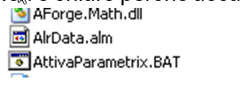
1 Check if the file AlrData.alm exists in C:\\Kvara\\Exe; if it does, delete it
2 Check if the file AlrData.alm exists in C:\\Parametrix; if it does, delete it
3 Copy folder: C:\\Kvara\\Exe
4 Delete folder C:\\Parametrx and reinstall it
Normally solved with points 1 and 2
PE0006 TABLE PUMP THERMAL OVERLOAD ACTIVE
Error explanation
Anomaly on the bench lifting system; The circuit breaker relating to the bench has tripped, it offers protection on the system against both short circuits and overloads. To reset the switch, move the selector to 0 and then to 1;


Possible causes
The causes can be divided into mechanical or electrical problems
Mechanical problems:
Oil pump motor blocked. You can try to start the table pump and check whether it actually rotates. If it is completely blocked, replace the oil pump;
There is not enough oil inside the tank;
The oil level inside the tank is low and the oil is very dirty, or the filter is dirty;
Tilting table blocked
Electrical problems:
Short circuit between motor phases;
Missing phase;
Short circuit in the motor windings;
Faulty switch
Possible solutions
In the photos below there is the pump with the relevant points of interest marked;


MECHANICAL
First, check that the motor cooling fan rotates freely. For example, try moving the fan with a screwdriver. If it is blocked, the pump must be replaced.
Check the oil level with a clean dipstick, and check whether there are deposits on the bottom:
if the level is low, top up with 32 viscosity oil and periodically monitor the system to check whether it empties again, as there may be leaks;
if there is a lot of dirt, empty the tank — there is a plug in the tank — and clean it with diesel fuel, then refill it;
Check that the piston joints and table joints are not blocked, then grease the relevant points.

ELECTRICAL → assistance from an electrician or a Donatoni technician on site is recommended
Check that there is no continuity between the various phases; disconnect the cable from the pump electrical box, insulate the terminals, reset the switch, and activate the oil pump. If it trips, the problem may be the cable;
Measure the input voltage with a multimeter and check that all phases are present. If, for example, one phase is missing, check that all terminals are properly tightened;
If the switch does not trip when carrying out the test in point 1, connect the cable to the pump. If the switch trips when starting the pump, the problem is the pump, so it must be replaced;
Related articles
PE0014 AXIS C OVERCURRENT
Error explanation
During automatic work cycles the PLC may generate an ExtraCurrent alarm for each individual axis due to exceeding the maximum load capacity of the motor involved
Possible causes
Instantaneous excessive stress in direction C
Axis C motor malfunction
Possible solutions
Press the reset button to reset the error; then press the emergency button, re-enable commands and resume normal use.
After attempting to execute point 1, if the error recurs while moving empty, in any direction replace axis C motor;
Related articles
PE0012 Z AXIS OVERCURRENT
Error explanation
During automatic work cycles PLC may generate an Extra current alarm for each individual axis due to exceeding the maximum load capacity of the motor involved
Possible causes
Excessive instantaneous stress in Z direction
Z-axis motor malfunction
Possible solutions
Press the reset button to reset the error; then press the emergency button, re-enable commands and resume normal use.
After attempting to perform step 1, if the error recurs while moving empty in any direction replace the axis Z motor
Related articles
PE0070 VACUUM CUPS ALREADY IN CONTACT (ERROR)
Error explanation
This error generally occurs when suction cups are placed on a piece.
Possible causes
Suction cups placed on piece;
Unregulated sensors;
Faulty sensors.
Possible solutions
Raise with axis Z to detach from piece. Press button to raise suction cups
Lower the suction cups via the dedicated button; open the steel protection casings on the suction cup arms and check that the low sensor LEDs are lit
Related articles
PE0023 MUTE ENABLED
Error explanation
The alarm 'Mute active' is automatically generated by the system whenever the modal selector key is removed from its designated position on the console
To restore the alarm it is sufficient to insert the safety key on the console and enable work mode.

Possible causes
.
Modal selector key not inserted or positioned at 0;
Faulty or incorrect electrical connection;
Possible solutions
Related articles
PE0000 GENERAL EMERGENCY
Error explanation
Machine in emergency situation, the red light is flashing and the machine does not move. The emergency circuit is open.
Possible causes
Emergency button pressed;
Emergency button failure;
Safety control unit inside the electrical panel failure;
Multi-core cable connected from the console to the electrical panel failure;
Emergency mushroom pressed;
Emergency stop failure;
Unlock emergency mushroom:

Check the correct functioning of the mushroom and the connected electrical contacts located underneath the mushroom itself (console button panel);

Check that the control unit is working correctly, that is, once you have verified that the emergency circuit is closed as per the wiring diagram, the control unit must function as follows:
With emergency button pressed (emergency circuit open):

With emergency mushroom released (emergency circuit closed):

Check the continuity between the cables connected to the mushroom contacts and the respective cables connected to the relevant terminal block in the electrical panel. Find the information on the diagram;
Fault of safety control unit inside electrical panel;
Multicore cable connected from console to electrical panel faulty;
Possible solutions